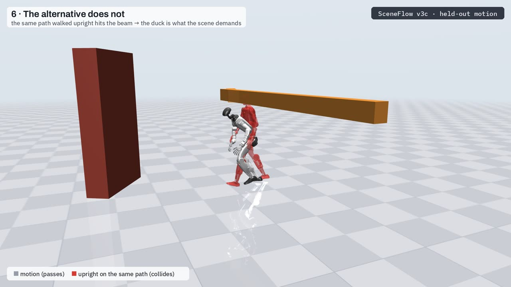
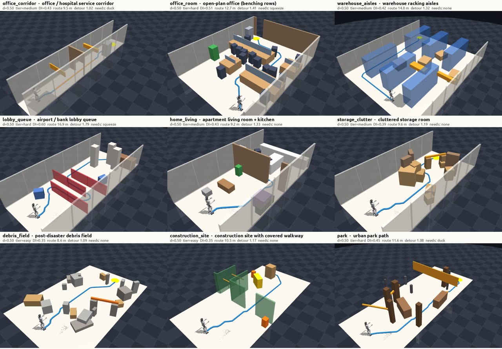

Motion2Scene Flow · Unitree G1 · research update · 9 Oct 2026
Two Flows
Learn the scenes that make a humanoid's motion necessary, then learn the motion those scenes demand.
motion → sceneSceneFlowgenerates certified scene–motion pairs from motion data alone
scene → motionFlow plannerplans whole-body motion; the SONIC tracker executes it
↻ cycleCycleFlowthe planner's likelihood scores the generator's scenes
⊡ judgeG1 Traverse Arenaunseen, certified scenes no generator built
SceneFlow on a motion it never saw: 8 box slots flow from noise to a scene in which the duck is required. Every clip in this deck is replayed from recorded model output or Isaac Lab physics.
linjiw · ~/flow · private repo motion2scene-flow-research→ / space to advance · R to read
The problem
Motion data has no scenes. Scene data has no motions.
A planner learns only what its data makes necessary
If every training scene can be walked around, the planner learns to walk around. To duck, crouch, squeeze or turn sideways it needs pairs where that motion is the only one that fits.
Mocap is rich but scene-less
Kimodo-G1 generations and Bones-SEED captures (142k clips, 288 h) show how people duck, side-step and stoop, with no record of what they avoided.
Hand-written rules are narrow
Our first data engine placed one rule obstacle per motion type. It gave the one big data win (+15.3 pp held out, F23), but its style leaked into our test panels (F60, F83).
Our approach
Learn the scene from the motion (SceneFlow) and keep only pairs an exact verifier certifies as necessary.
Learn the motion from the scene (a whole-body flow planner), executed by the frozen SONIC tracker in physics.
Close the loop (CycleFlow): keep the scenes the planner reads as explaining the motion.
Judge on scenes no generator built: the certified G1 Traverse Arena, sealed test splits.
F23 · F60 · F83 in research/CLOSED_LOOP_TEACHER_RESULT.md2 / 24
The system · one loop, two learned flows
From raw motion to a robot that ducks in a scene it never saw
numbers: SceneFlow v3c · teacher C = e1-v3a-cyc · SONIC = released GR00T-WBC tracker3 / 24
Flow 1 · SceneFlow · the target
A scene is useful when the motion fits it and its alternatives do not

Held-out Kimodo duck. Grey: the motion passes with 5.5 cm to spare. Red: the same path walked upright hits the beam.
Three exact checks per scene
feasible
the motion clears every box by ≥ 4 cm (45 body capsules, hands included)
necessary
the walking alternative from the same past collides
right cause
a duck is explained by height: upright on the same path must collide. A detour is explained by position: its posture on the straight path must collide
Alternatives come from real sibling futures (Kimodo continuations of one prefix, 15 SONIC skills) or, for raw mocap, from the motion's own gait carried straight ahead. No per-behaviour rules.
Without the cause check a duck that drifts 20 cm sideways gets "explained" by a pillar. That was the 0% cause-recovery failure of the earlier LfLH-style generator.
Rectified flow, xt = (1−t)ε + t·x1, target x1 − ε, on engine-certified pairs (the data engine grows boxes from critical points of the alternatives, then verifies them). Mirror augmentation. v3c: Kimodo contrast + 4× Bones decision points + posture-rich Kimodo, posture scenes ×3.
Two-sided guidance
From t = 0.5 the clean estimate is nudged so the motion keeps its 5 cm margin and the motion's own straight gait overlaps a box. Needs nothing but the motion, so it works on raw mocap.
Tunable
"3 obstacles, overhead only, 8 cm margin, necessary" is one call: each knob has a learned null, so any subset can be set and the rest marginalised (classifier-free guidance over knobs).
held-out Kimodo motion · v3c · recorded sampling path
1 the motion alone · 2 the 28×30 body points SceneFlow conditions on · 3 eight slots flow from noise (grey) to boxes (amber = overhead, brick = ground), guidance from t = 0.5 · 4 snap to a 4 cm margin and exact capsule check · 5 the motion passes · 6 the same path upright collides, so the pair is kept.
capture_sceneflow.py records x_t at each of 40 Euler steps; render_sceneflow.py (MuJoCo)6 / 24
Flow 1 · SceneFlow · interactive
Scrub the flow yourself
Loading 8 held-out motions…
t = 1.00
drag to orbit · scroll to zoom
data: recorded sampling paths of v3c (same seed as the clips), decoded in the browser with the model's slot rule7 / 24
Flow 1 · SceneFlow · a distribution, not one answer
One motion, many scenes that each make it necessary
“A drunk person crouches down, moves forward a short distance, and stands up.”
The scene is not identifiable from the motion: a crouch is explained by a beam, a duct or a shelf edge. SceneFlow models the distribution. The verifier keeps 6 of these 8; sample 3 does not recover the cause (one counterfactual still passes), sample 4 puts a box inside the 4 cm margin (no salvage).
0.89occupancy diversity of useful scenes per motion (v3a, held-out)
Flow 1 · SceneFlow · behaviours from data, no rule per behaviour
Ducks, crouches, sideways squeezes, shoulder turns, human stops
Human mocap it never saw. A Bones-SEED side step: two cabinets appear, and the person's own gait carried straight ahead hits them.
All six motions are held out from SceneFlow's training. The Kimodo clips were generated fresh for validation, in styles (angry, drunk, tired, happy) excluded from every training source.
V-pairs dev motions: vpairs-kimodo-v1, vpairs-bones-v1 (test halves sealed)9 / 24
Flow 1 · SceneFlow · results on 600 held-out motions
Motion variety made the generator good on human motion
all held-out motionsheld-out human mocap (Bones)useful = feasible ∧ walk blocked ∧ right cause, raw, no salvage
generator
posture
realism
covered
v2a
—
0.64
0.86
v3a · real objects
0.29
0.88
0.86
+ 4× Bones motions
0.24
0.87
0.90
v3c · + posture-rich Kimodo
0.29
0.87
0.91
v3c + necessity guidance
0.33
0.87
0.93
engine (oracle, sees the alternatives)
0.59
0.87
0.98
+24 pp on held-out human motion (0.44 → 0.68) from 4× more human decision points (E2), at fixed compute.
Scale alone diluted posture (0.29 → 0.24); re-weighting could not fix it. Posture-rich motions did (E2d), so v3c is adopted.
Gap to the oracle engine is now posture (0.33 vs 0.59) and arms-close "body" targets.
SCENEFLOW_V3_PLAN.md §7–8.7 · artifacts/scenegen-e0-v3a, -e2-offline, -e2b-offline · covered = motions with ≥ 1 useful scene of 810 / 24
Flow 2 · planner · model
A whole-body flow planner that the tracker can follow
Teacher (privileged map)
The current default teacher C is trained only on cycle-filtered SceneFlow scenes over 148 contrast groups (Kimodo and SONIC continuations; 15,264 windows, 3 seeds).
Lidar student
The same network on maps built from a simulated head MID-360 (ray-cast memory, its own route). On fresh layouts it matched its privileged teacher, 207 vs 208 of 252 (F72).
What search adds
Guidance pushes candidates out of the 8 cm execution envelope while they are being sampled; selection then needs no luck. The network proposes, search decides.
closed_loop/planner.py · wholebody/passage_* · PASSAGE convention (data at t = 0)11 / 24
Flow 2 · planner · demo
Sixteen whole-body futures from one measured state
teacher C · beam underside 1.12 m · offline replay of a recorded state
Left, network only: the flow proposes ducks, but 0 of 16 keep the 8 cm execution margin, so the planner would have to resample or stop. Right, with clearance guidance: the same noise, 16 of 16 pass, and the planner picks the one that makes the most progress. Grey dots: pelvis paths during denoising; blue: the measured history.
capture_planner.py (same checkpoint, config and seed as the episode) · render_planner.py12 / 24
Flow 2 · planner · interactive
Watch the candidates denoise, then roll out
Loading planner states…
denoising 0/10
drag to orbit · scroll to zoom
Teal = passes the 4 cm check against 8 cm-inflated boxes; red = fails. Shaded slab under each overhead = the 8 cm execution envelope.
key points from MuJoCo FK of the recorded candidate states13 / 24
Flow 2 · planner · closed loop in physics
The planner on scenes made from motions it never saw
V-learn tasks: two SceneFlow scenes chained in one room, each made from a held-out Kimodo or Bones motion and checked against the whole layout. Overheads are raised to the 1.26 m G1 can execute.
Deep duck, executed. Teacher C under a 1.12 m beam; pelvis down to 0.58 m.
86/90V-learn v1, one scene per task: ceiling, retired
Contrastive data first, then search that respects the tracker
These panels were read with the earlier teacher trained on rule-engine necessity pairs. Since 9 Oct the teacher data come from SceneFlow only (teacher C), judged on V-learn and the arena.
CycleFlow · closing the loop between the two flows
Necessity is information
The motion should be more likely under the planner once the generated scene is shown. With −ℓφ as a surrogate for log q(m | s), the Barber–Agakov bound makes the expected gain a lower bound on the information I(M; S) the scene carries about the motion.
Not CycleGAN's L1 cycle. Both maps are many-to-many: one beam admits many ducks, one duck many beams. An L1 round trip collapses that diversity (the Augmented CycleGAN result).
Verifiers replace discriminators. Only exactly verified scenes are scored, so there is no adversarial game.
Common random numbers. ℓ is the flow-matching loss under the same 16 (t, ε) draws for every scene, so differences are low-variance.
No prior motion ↔ scene cycle found in the literature review; closest is Li et al., SIGGRAPH 2024 (arXiv 2405.12460).
Eight verified scenes, ranked by how well they explain the motion
held-out human mocap · stop, look back, turn
All eight pass the exact verifier. The planners read the ones that block the path where the person stops as explaining the stop (Δ up to +4.2 ×10⁻³); an overhead beam explains a stop and turn poorly (Δ −10.9 ×10⁻³). The filter keeps the top-1 of up to four verified scenes per motion. Δ is averaged over four scorer planners trained on SceneFlow or data-engine scenes (seeds 0 and 2).
On new Kimodo behaviours (styled ducks, crouch-and-stand) every scene scores Δ < 0 for every scorer: a planner can only explain a scene with behaviours it has learned (F77). That is why variety, not the cycle alone, has to bring new behaviours in.
The cycle selects better training data; it does not yet train the generator
CF1 · teachers on cycle-filtered vs random SceneFlow scenes (same 148 motions, 15,264 windows, 3 seeds each, goals of 56)
C: cycle-filtered (top-1 by Δ)V: one random verified scene
Network-only proposals: +4.3 goals, 19 tasks better vs 7 worse, sign test p = 0.029. With guidance and the cost route: +2.0, n.s. Offline the C planners read held-out scene styles in the right direction 4–5 pp more often (F82). C is now the default teacher.
question
result
Does a planner trained on learned scenes read new motions' scenes? (F77, Δ > 0 rate on held-out human mocap)
learned 0.77–0.86 vs rule-trained 0.51
yes
Does filtering by Δ make better teachers? (CF1 = F82)
+4.3 / 56 unguided, p = 0.029
yes
Can SceneFlow learn from Δ? (CF2-gen r1, r2: reward-weighted fine-tune)
Δ unchanged; useful −0.5 / −0.9 pp
not yet
Does the network identify the true scene among 8? (top-1, chance 12.5%)
0.14–0.32 on anything unseen
shallow
Within one motion the Δ differences are small against scorer noise, and selection by the training scorers does not transfer to held-out scorers. So the cycle stays an export-time filter, and the generator improves through variety (v3c). Next: the dual step (CF3), with the planner's map use as a second cycle term.
A benchmark no generator built, with necessity certified per scene
Why. Our old panels shared a 15 cm beam primitive with the rule data, and every family had an upright detour (F60). BARN saw the same: same-generator test worlds saturate.
Certificate. Dijkstra over (cell × posture mode: stand, duck, crouch, squeeze, duck-squeeze) on exact clearance fields. A skill is required when no route exists without it.
Real objects. Doors, desks, racks, pallets, cars, gate arms, scaffold ledgers, planks on supports; dimensions from building codes and catalogs. Nothing floats.
Clutter that keeps the goal reachable, so density adds no rejection bias (1,044 of 1,044 slots admitted).
Tiers A/B · arena-v1
1,044 scenes, 17 families from park paths to lobby queues and warehouse aisles. Sealed test splits: held-out instances, held-out families, extrapolation.
Tier C · whole body
371 scenes (arena-c3) whose gates need arms in, side-on or ducking. Every gate is passed by a SONIC-executed witness under ±4.4 cm shifts.

Preview namespace only; galleries never touch test instances (per-scene sha256 manifest, test commitment hash).
Passes. Deployed block: guided search, clearance-weighted route, deterministic physics. Blue dots: pelvis trail; teal: the plan in force.
Failures. In dense clutter the 16 proposals often hold no plan that fits; the stop rule fires and the body still touches a box.
In the arena smoke anatomy, 12–13 of 18–19 contacts followed "no safe plan" and 6 were execution deviations under a safe plan. Missing proposals is a coverage problem, which motion and scene variety should move.
Most contacts follow "no safe plan": none of the 16 candidates fits the clutter. Tight margins did not change the count (16 = 16 of 52). Motion and scene variety is the lever, so variety tests read tiers A/B.
Tier C fails on execution
Allowing squeezes turns "no plan" into "plan executed 4–7 cm off". Forcing the witnesses' arm tuck and side heading executes (arm span 75 → 47 cm), but thighs and lateral precision then limit (F80, F85).
Rules we hold ourselves to
Learned generator only from 9 Oct; no more rule-vs-learned panels (the old ones resemble the rule's scenes).
Rounds are registered with adoption rules before results; decisions use seed means of ≥ 3 training seeds and paired tests.
Deterministic physics: identical inputs give bitwise identical episodes (F68). Arena test splits are sealed and read once.
arena-v1 dev by family (teacher C, deployed block, goals of 4)
On the rule generator's own panel the learned-only teachers still trail the rule teacher on beams (F83). We report it and stopped using that panel for decisions.
Same scene recipe, windows matched at 15,264: 148 contrast groups → + 1,200 Bones decision points → + posture-rich Kimodo and arms-in walks. 426 episodes on V-learn v2.
VA · scenes per motion
1 / 4 / 16 distinct cycle-filtered scenes per motion, same motions and budget.
VC · object categories
18 real-object categories against a box-only control.
CF3 · the dual step
Alternate generator and planner updates: reward-weighted SceneFlow on Δ, a map-use contrastive term for the planner. Judged on V-learn, never on its own scorer.
Execution where gates are tight
SONIC's lateral error is predictable (81% of variance) but not commandable; heading, leg motion and replanning are the levers (F81).
One sealed read
The best adopted recipe vs teacher C on the arena test splits, once. Target: IROS 2027 (deadline ~1 Mar) or RSS 2027.
Adoption rule for every variety arm: ≥ +4 of 71 V-learn goals (seed means), paired sign test p < 0.10, posture tasks not lower.
Today, 9 Oct, in order
F82 · CF1 passescycle-filtered SceneFlow scenes make better teachers; C becomes the default
F84 · F85tier C stays near the floor; it becomes a stretch tier